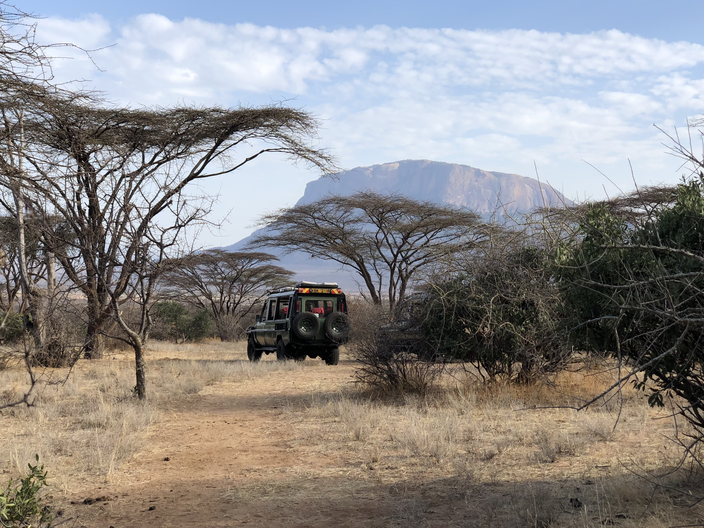
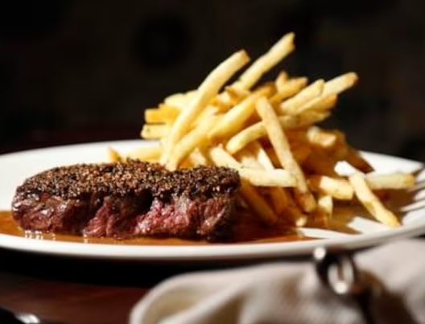
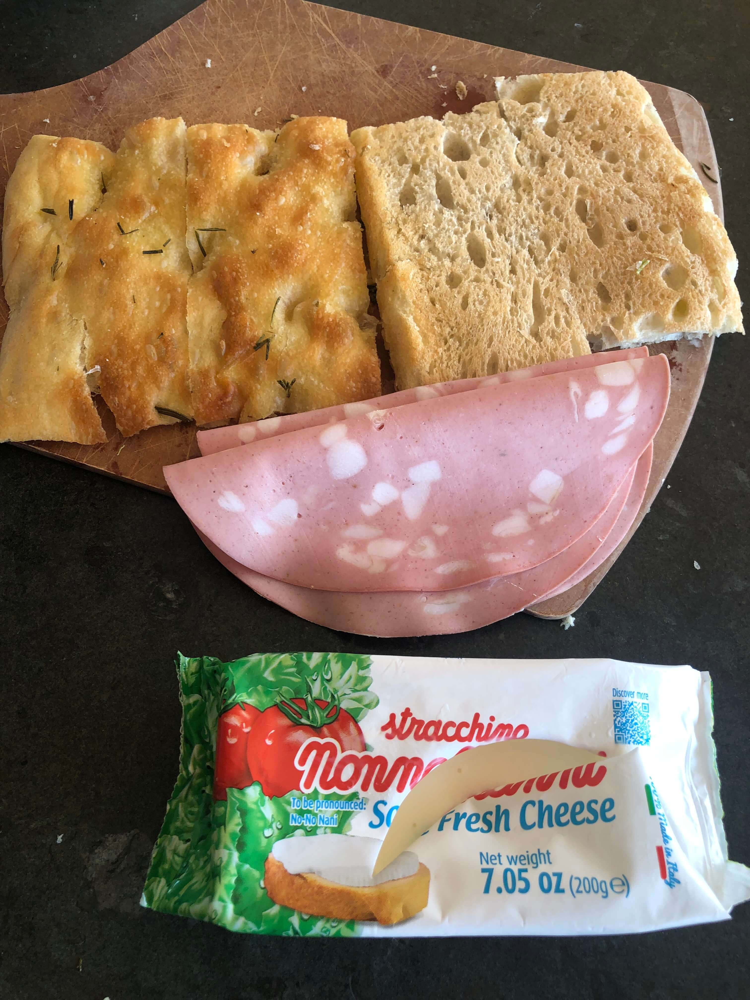
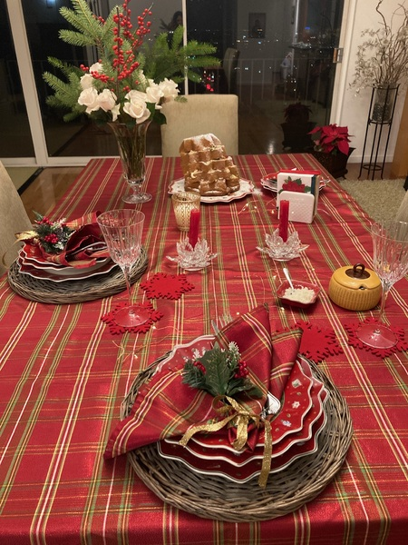
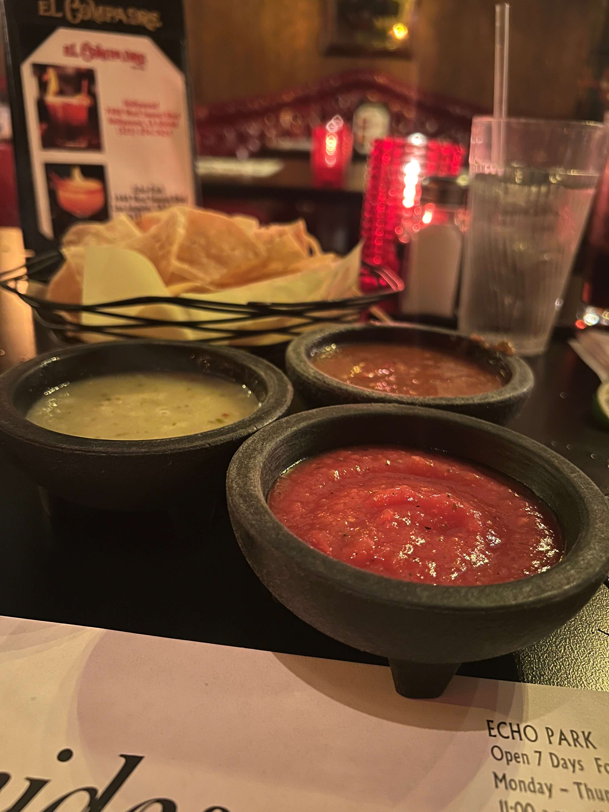
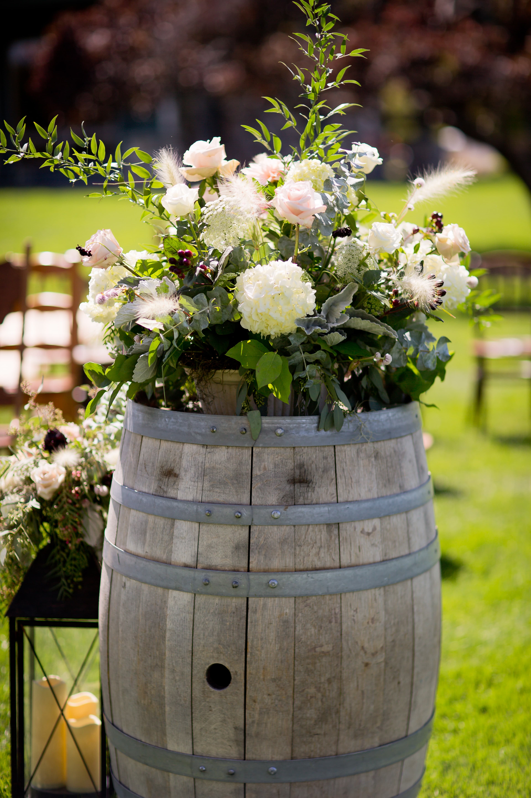
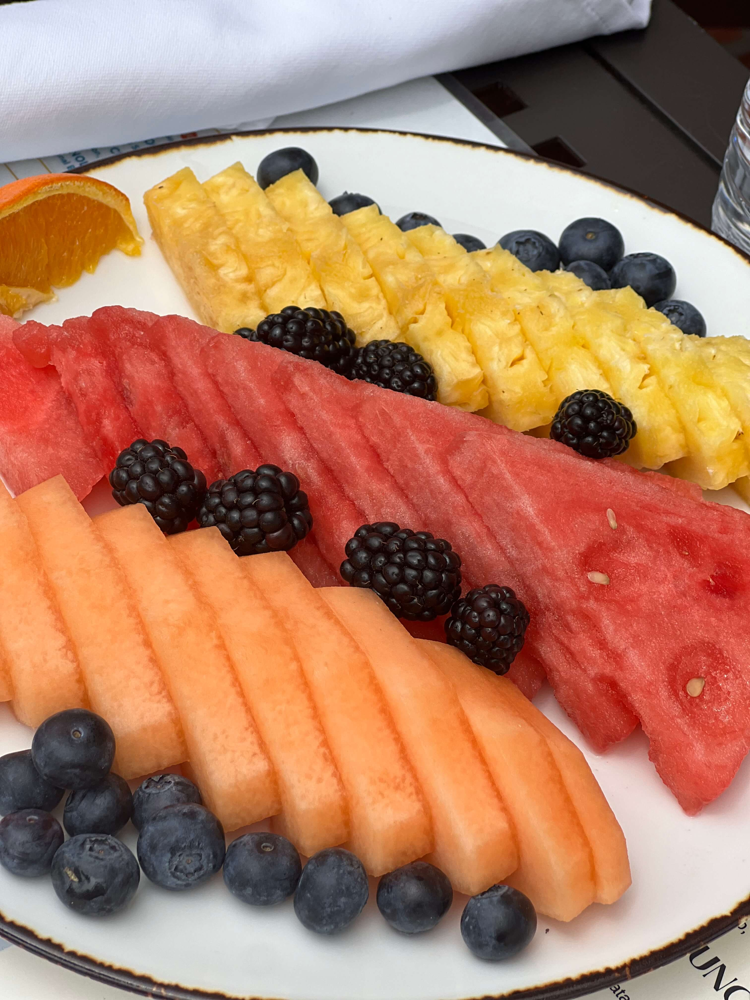
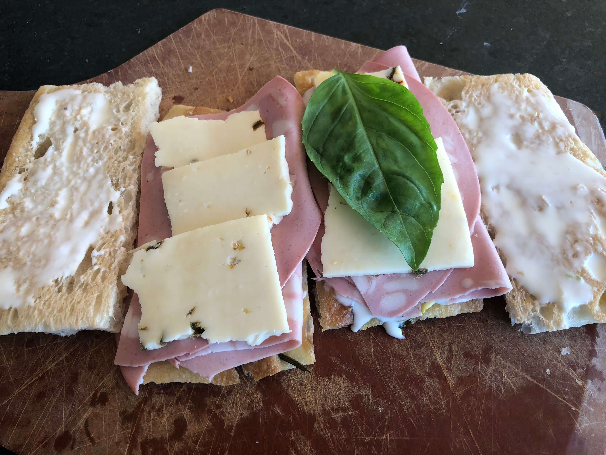
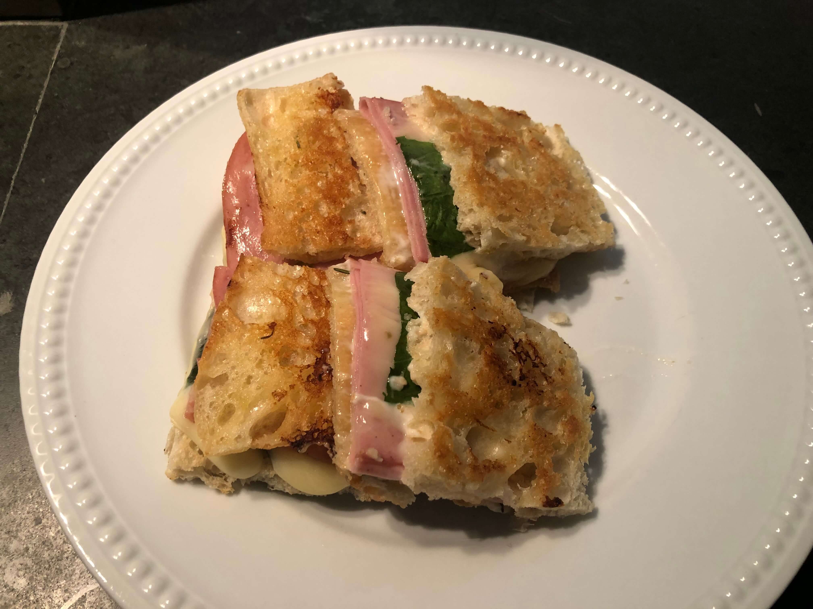

Media


Charbroiled Steak

Focaccia with Mortadella

Christmas Dinner Table and Dessert

Favorite Salsas


Fruit Plate with Pineapple & Melon

Focaccia with Mortadella
Finding the Wildebeasts on Safari

Grilled Cheese Focaccia with Mortadella